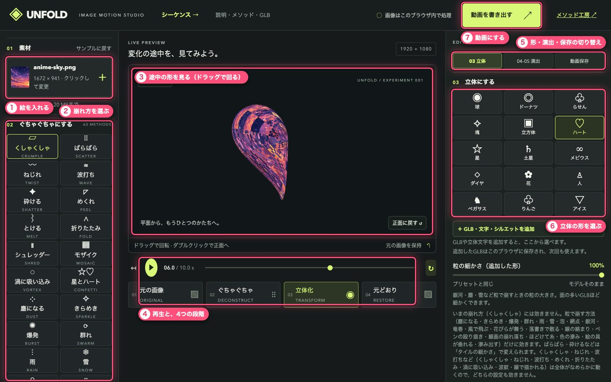
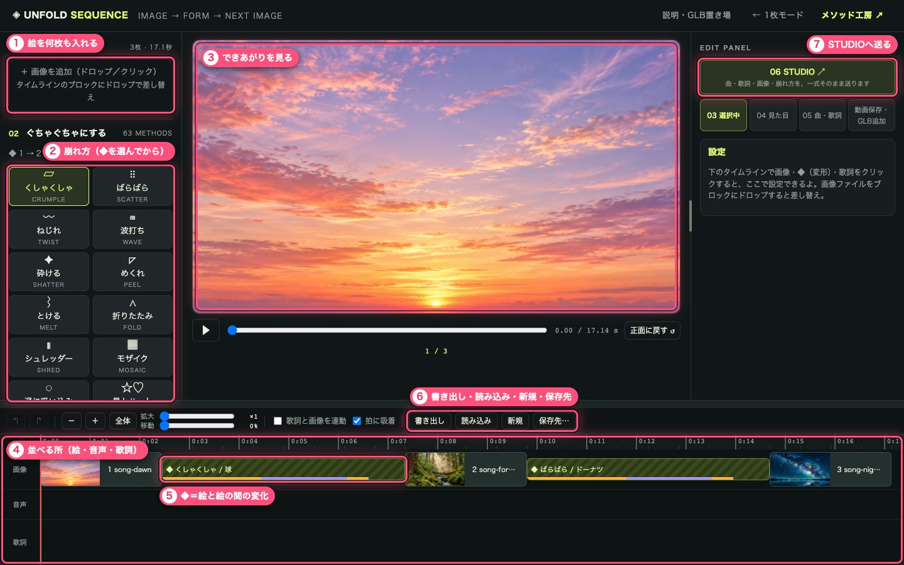
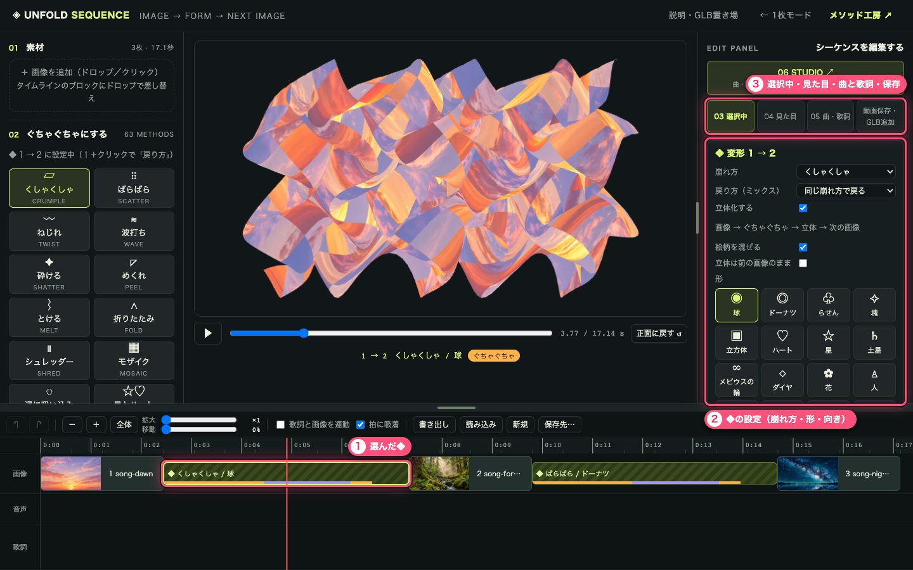
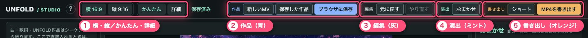
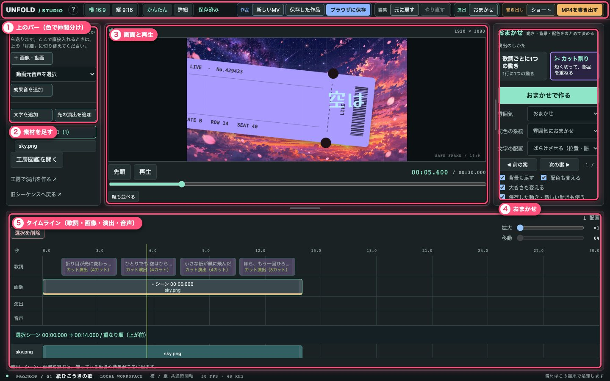
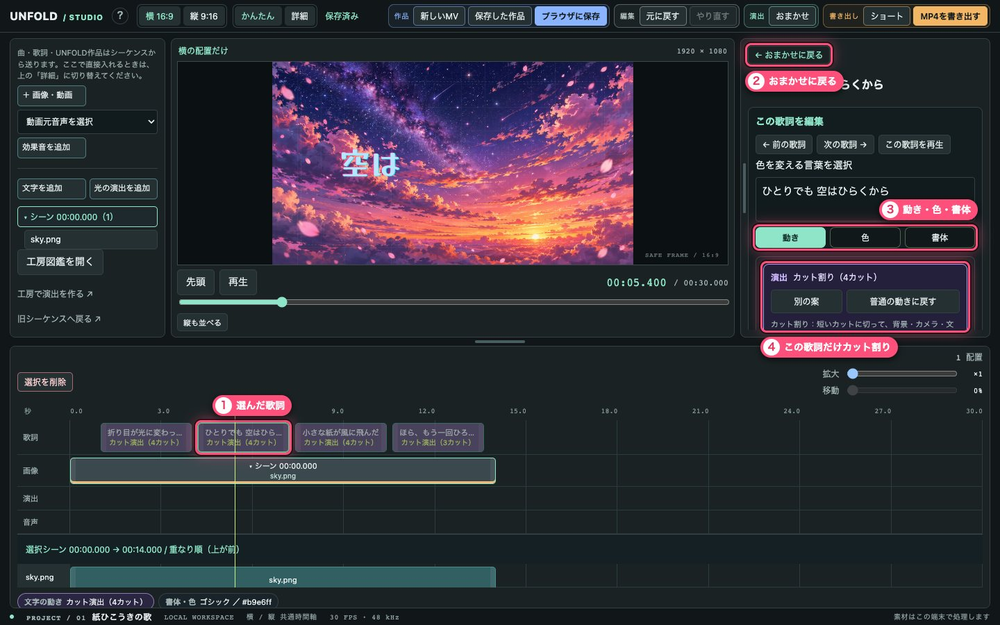
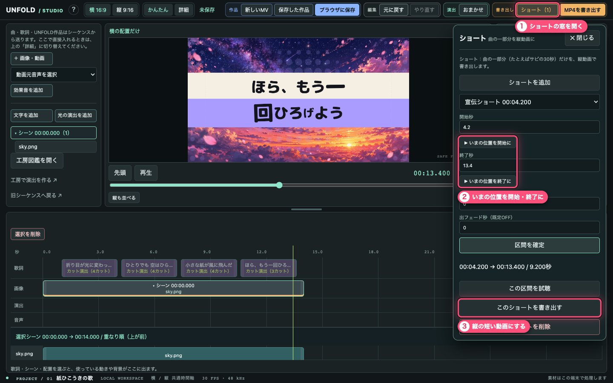
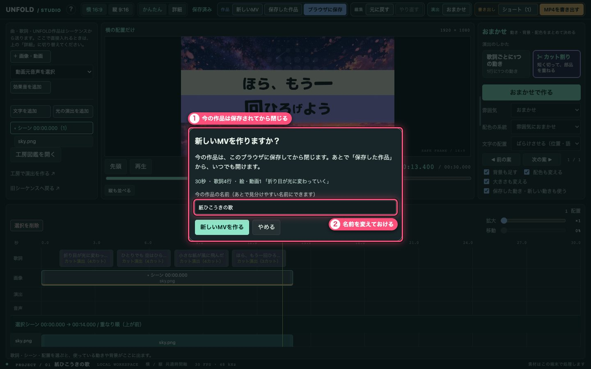

HOW TO USE
使い方 — 画面の見かた
UNFOLD には画面が3つあります。まず1枚の絵で試して、何枚もつないで曲に合わせ、最後に STUDIO で歌詞のMVに仕上げる、という順番です。写真のピンクの番号が、下の説明の番号です。
011枚モード
1枚の絵が「元の画像 → ぐちゃぐちゃ → 立体 → 元どおり」と変わる動画を作ります。開いたらすぐ見本が動いています。

- 絵を入れる「素材」の枠に絵をドロップするか、クリックして選びます（PNG・JPG・WebP、20MBまで）。「サンプルに戻す」で見本の絵に戻ります。出力の形（16:9・1:1・9:16）と形が違う絵は、入れるときに「全体を見せる」「画面いっぱいにする（見せたいところを選ぶ）」「自由に切り抜く」から選べます。あとから「切り抜き・収め方を調整…」でやり直せます。
- 崩れ方を選ぶくしゃくしゃ・ばらばら・砕ける・塵になる… から1つ。押すとすぐ動きが変わります。
- 途中の形を見るドラッグで立体を回せます。ダブルクリックか「正面に戻す」で正面に戻ります。
- 再生と、4つの段階再生ボタンと時間のバー。下の4つの札（元の画像・ぐちゃぐちゃ・立体化・元どおり）を押すと、その場面に飛びます。
- 形・演出・保存の切り替え「03 立体」で形、「04-05 演出」でブラー・シェイク・グリッチ・光のにじみなどの演出と仕上げ、「動画保存」で長さ・画面の比率・画質などを決めます。
- 立体の形を選ぶ球・ハート・土星・人… から選びます。その下の「＋ GLB・文字・シルエットを追加」で、3Dモデルや文字の形も足せます。
- 動画にする右上の「動画を書き出す」で、動画ファイルにして保存します。
02シーケンス
絵を何枚も並べて、絵と絵の間の変化（◆）を決めます。曲を入れると拍に合わせて切り替わり、歌詞も入れられます。

- 絵を何枚も入れる入れた順にタイムラインに並びます。タイムラインのブロックに絵をドロップすると、その絵を差し替えます。画面（16:9）と形が違う絵は、1枚ごとに「全体を見せる」か「切り抜く」かを選べます（複数枚は「残りも同じ設定で」でまとめて）。入れたあとも、絵を選んで「切り抜き・収め方を調整…」で変えられます。
- 崩れ方タイムラインの◆を選んでから押すと、その◆の崩れ方が変わります。
- できあがりを見る再生すると、つないだ動画をここで確かめられます。
- 並べる所上から「画像」「音声」「歌詞」。ドラッグで並べ替え、端をつまんで長さを変えます。
- ◆ ＝ 絵と絵の間の変化押すと、右にその◆の設定が出ます（下の写真）。
- 書き出し・読み込み・新規・保存先「書き出し」は作品を1つのファイル（.unfold）に保存、「読み込み」はそのファイルを開きます。「新規」は確かめてから空にします（書き出していない変更は消えます）。「保存先…」を決めると、パソコンのファイルにも自動で保存します。
- STUDIOへ送る曲・歌詞・絵・崩れ方を一式そのまま STUDIO に送ります。

- 選んだ◆枠が光っているのが、いま選んでいる◆です。
- ◆の設定崩れ方・戻り方・立体にするか・絵柄を混ぜるか・形。ここで変えたことは、その◆だけに効きます。
- タブ「03 選択中」は選んだものの設定、「04 見た目」は再生位置の見た目、「05 曲・歌詞」は曲と歌詞、「動画保存・GLB追加」は動画にする所です。
03STUDIO
曲・歌詞・絵・動画・UNFOLDの変形を、同じ曲の時間に重ねて、MVに仕上げる画面です。シーケンスの「06 STUDIO」から送ると、全部そろった状態で開きます。
上のバー：ボタンは色で仲間分け

- 青 ＝ 作品新しいMV・保存した作品・ブラウザに保存
- 灰 ＝ 編集元に戻す・やり直す
- ミント ＝ 演出・作るおまかせ、おまかせで作る
- オレンジ ＝ 書き出しショート・MP4を書き出す
- 水色 ＝ 素材を足す左の列の ＋画像・動画、文字を追加 など
- 赤 ＝ 消す・止める選択を削除・ショートを削除・書き出しを中止
- 紫 ＝ カット割り短いカットに切る演出
- 横・縦／かんたん・詳細「横 16:9」「縦 9:16」で、どちらの構図を見るか。「かんたん」はよく使うものだけ、「詳細」はすべての操作を出します。
- 作品（青）「新しいMV」はまっさらな作品を作ります（下の写真のように確かめてから）。作ったあとに出る窓で、歌（MP3 など）・歌詞ファイル（LRC / SRT / JSON / TXT）・画像と動画を選べます（選ばずに「あとで入れる」でも始められます）。「保存した作品」で、このブラウザに保存した作品を開きます。編集は少しあとに自動でも保存されます。
- 編集（灰）元に戻す・やり直す。
- 演出（ミント）「おまかせ」を押すと、右のパネルがおまかせに戻ります。
- 書き出し（オレンジ）「ショート」で曲の一部分を縦の短い動画に、「MP4を書き出す」で曲全体を音つきのMP4にします。
画面全体

- 上のバー上の写真のとおり、色で仲間分けしてあります。
- 素材を足す「＋ 画像・動画」「♪ 歌を入れる」「歌詞ファイルを入れる」「効果音を追加」「文字を追加」「光の演出を追加」。歌と歌詞は、シーケンスから一式を送ることもできます。UNFOLD作品を直接置く時は「詳細」に切り替えます。
- 画面と再生できあがりの絵。「先頭」「再生」と、下のバーで再生位置を動かします。
- おまかせ何も選んでいない時の右のパネル。「演出のしかた」で 歌詞ごとに1つの動き か ✂ カット割り（短く切って、背景・カメラ・文字の部品を重ねる）を選んで、「おまかせで作る」。「前の案／次の案」で行き来できます。
- タイムライン上から「歌詞」「画像」「演出」「音声」。押すと選べて、右のパネルがその設定になります。「選択を削除」で選んだものを消します（元に戻すで戻せます）。
歌詞を選んだ時：この歌詞だけカット割りにする

- 選んだ歌詞タイムラインの歌詞を押すと、画面がその歌詞の所へ動きます。
- おまかせに戻る何かを選んでいる間は、右のパネルの一番上のこのボタンで、おまかせの画面に戻れます。
- 動き・色・書体その歌詞の動き、言葉ごとの色、書体を変えます。
- この歌詞だけカット割り「✂ この歌詞をカット割りにする」で、その歌詞だけがカット演出になります。「別の案」で引き直し、「普通の動きに戻す」でやめられます。下の動きの札を選んでも、普通の動きに戻ります。
ショート（曲の一部分を縦動画に）

- ショートの窓を開く作ったショートの数が（1）のように出ます。窓を開いたままでも、再生やタイムラインを使えます。
- いまの位置を開始・終了に再生位置をサビの頭に合わせて「いまの位置を開始に」、終わりで「いまの位置を終了に」。数字を直接入れても大丈夫です。「区間を確定」で決まります。
- 縦の短い動画にする「この区間を試聴」で確かめて、「このショートを書き出す」で縦のMP4にします。
「新しいMV」を押した時

- 今の作品は保存されてから閉じる「やめる」（または Esc）なら何も変わりません。作った後は、上のバーに「↩ さっきの作品に戻る」が出ます。
- 名前を変えておけるあとで「保存した作品」で見分けやすいように。一覧には、保存した日時・長さ・歌詞の数・最初の歌詞も出ます。